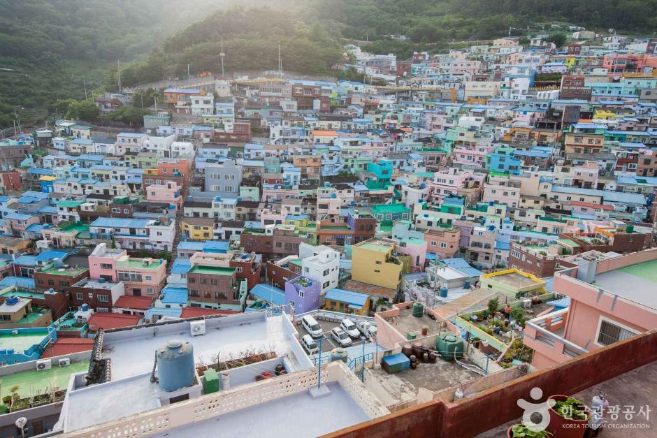
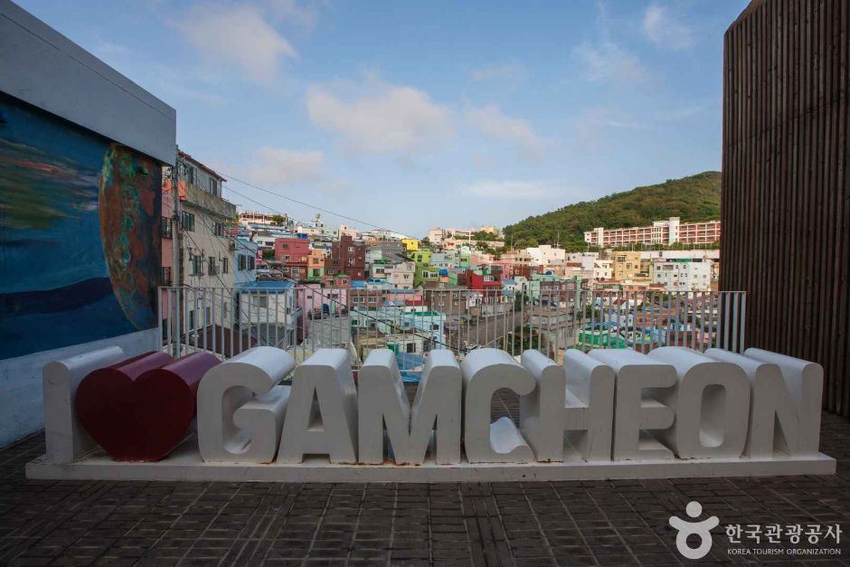
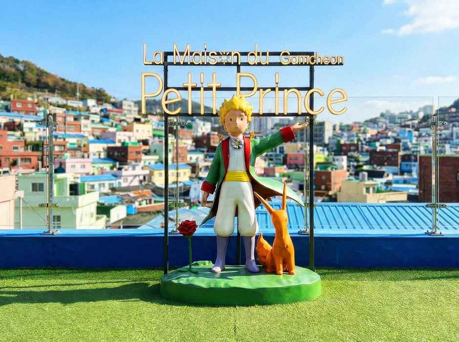
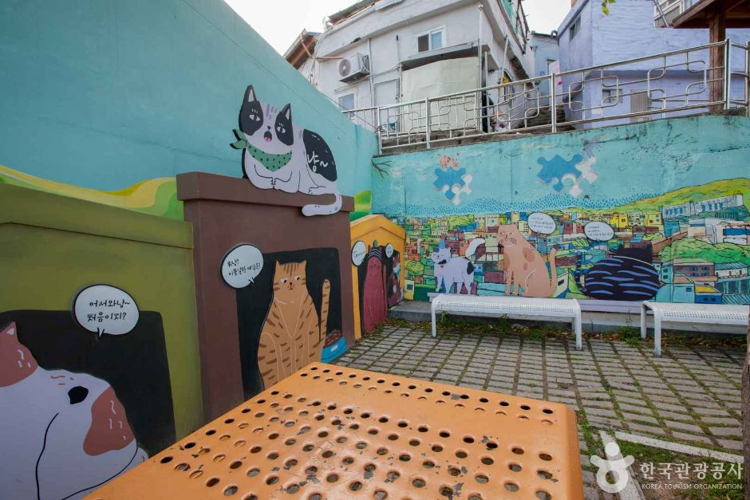
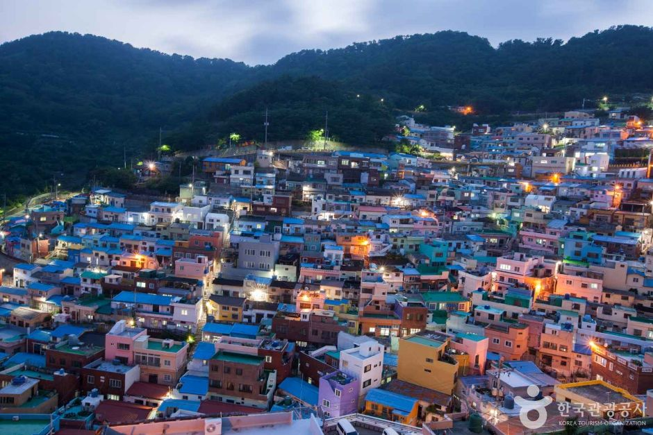

Gamcheon Culture Village Guide: Overview
This Gamcheon Culture Village guide covers Busan's famous hillside of pastel houses in Saha-gu. Gamcheon Culture Village began in the 1950s as a home for Korean War refugees. Its stepped rows of houses and maze of alleys run down the slopes of Cheonmasan, which is why it is often called the "Machu Picchu" or "Santorini" of Korea.
A public art project in 2009 turned the run-down hillside into an open-air gallery of murals, sculptures, small galleries and craft studios. It won Korea's Presidential Award for spatial culture in 2016. It is still a home to about 1,300 residents, so this guide also covers the new visiting rules. We checked the details against Korea Tourism Organization (KTO) data, Visit Busan, the village's official site and Saha-gu's special management plan.
"A whole hillside of colour above Busan's harbour. Come in daylight, walk quietly and remember people live here."

From Refugee Hillside to Art Village
During and after the Korean War, refugees built homes on the steep slopes above Gamcheon port. In the 1950s, followers of the Taegukdo religion settled here, and much of the village's layout dates from that time. Houses were built in terraces, so homes higher up still get sun and a view over the roofs below.
By the 2000s it was one of Busan's poorer hillside neighbourhoods. The 2009 art project "Dreaming of Busan's Machu Picchu" brought artists and residents together to paint walls and fill empty houses with galleries and studios. Today it is one of Busan's most visited places: Saha-gu counted 3.12 million visitors in 2025.

What to See: Viewpoints, Alleys and the Little Prince
Start at the information centre and the Small Museum near the entrance, which tells the village's story. The main street, Gamnae 2-ro, follows the hillside past cafés, shops and art. The Haneulmaru observation deck gives one of the best views over the rooftops toward the harbour.
The most popular photo spot is the Little Prince and Fox sculpture looking out over the village; there is often a queue. Nearby, the Little Prince exhibition (어린왕자 전시관, 200 Gamnae 1-ro) is described by KTO as Korea's only Little Prince exhibition officially recognised by the Little Prince foundation. It has photo zones and rooms themed on Saint-Exupéry's story and is open 09:00–18:00 daily.

The Stamp Map Walk
Buy the stamp map (2,000 KRW, card accepted) at the information centre and collect stamps at points along the alleys. Saha-gu suggests two kinds of walk: a 40-minute round trip along the main street, or a 1-hour-20-minute alley route, one of which is the stamp course. Money from the maps supports resident services such as the village laundry and kimchi-sharing.
Groups of 10 or more must buy one map each since August 1, 2026. Saha-gu plans to raise the price to 3,000 KRW from January 1, 2027.

Visitor Information
| Item | Details |
|---|---|
| Address | Information centre, 203 Gamnae 2-ro, Saha-gu, Busan (부산광역시 사하구 감내2로 203) |
| Phone | +82-51-204-1444 (information centre) |
| Information centre hours | Daily; 09:00–18:00 (Mar–Oct), 09:00–17:00 (Nov–Feb) |
| Visiting hours | Residential alleys 09:00–18:00 (trial since Aug 1, 2026; in full force from Jan 1, 2027) |
| Admission | Free; stamp map 2,000 KRW (3,000 KRW planned from Jan 1, 2027); groups of 10+ must buy maps |
| Little Prince exhibition | 200 Gamnae 1-ro; 09:00–18:00 daily; adults 14,000 KRW, children 12,000 KRW; +82-51-207-1211 |
| Nearest stations | Toseong (Line 1) exit 6 or Goejeong (Line 1) exit 6, then village bus |
| Village buses | Saha 1-1, Seo-gu 2, Seo-gu 2-2 (from Toseong); Saha 1, Saha 1-1 (from Goejeong); stop: Gamjeong Elementary School |
| Vehicles | Tourist vehicles, including taxis, barred from about 1 km of Gamnae 2-ro, 09:00–18:00; fines from Jan 1, 2028 |
| Facilities | Bag storage and guide referrals at the information centre; accessible toilets and parking |
Sources: Korea Tourism Organization data for Gamcheon Culture Village (부산 감천문화마을) and the Little Prince exhibition; Visit Busan; the official Gamcheon Culture Village site (gamcheon.or.kr); Saha-gu's Gamcheon special management area plan. Photos © Korea Tourism Organization (KOGL Type 3, attribution), unmodified. No AI-generated images.
Getting There
From Busan Station or Nampo-dong, take Busan Metro Line 1 to Toseong Station and leave by exit 6. Cross to the Pusan National University Hospital bus stop and take village bus Saha 1-1, Seo-gu 2 or Seo-gu 2-2 up the hill. Get off at Gamjeong Elementary School and walk about 5 minutes to the entrance. The same buses also stop at Chungmu Market near Jagalchi Station exit 1.
From Gimhae Airport, the village site suggests the Busan-Gimhae Light Rail to Sasang, then city bus 161 to Sampung Apartment and village bus Saha 1 or Saha 1-1. If you come by taxi, get out at the entrance; the main street is closed to tourist vehicles in the daytime.

Tips for Visiting
- Respect the residents: talk quietly, don't open gates or look into windows, and don't photograph residents. Drones are not allowed.
- Go early: arrive around 09:00 on a weekday to beat the queue at the Little Prince sculpture.
- Wear good shoes: the alleys are steep, with many steps. Leave bags at the information centre.
- Watch the clock in winter: from November to February, the information centre closes at 17:00, and sunset in late November is around 17:15.
- Spend locally: cafés, craft studios and the stamp map all support the village. Take your rubbish with you.
How It Compares with Other Korean Mural Villages
| Gamcheon Culture Village (Busan) | Huinnyeoul Culture Village (Busan) | Ihwa Mural Village (Seoul) | |
|---|---|---|---|
| Setting | Terraced hillside above the port | Cliffside lanes above the sea, Yeongdo | Hillside near Naksan Park |
| Highlights | Pastel rooftops, Little Prince, stamp map | Sea views, coastal walking path | City views, Seoul City Wall |
| Crowds | Very busy; visiting-hour rules | Busy at weekends | Moderate |
| Access | Line 1 + village bus | Bus from Nampo-dong | Line 4 Hyehwa Station |
| Best for | First-time Busan visitors | Ocean views and a coastal walk | Combining with the Seoul City Wall |
Who It Suits
- Great for: First-time visitors to Busan who want its most famous view.
- Great for: Photographers and art lovers, as long as they respect residents' privacy.
- Great for: Families with older children who can handle stairs.
- Less ideal: Visitors with limited mobility or strollers; the alleys are steep and narrow.
- Less ideal: Night-time visits; the residential area asks visitors to leave by 18:00.
Plan Your Busan Trip
Gamcheon Culture Village FAQ
Where is Gamcheon Culture Village?
Gamcheon Culture Village (감천문화마을) is on the slopes of Cheonmasan in Gamcheon-dong, Saha-gu, in western Busan. The information centre is at 203 Gamnae 2-ro, Saha-gu (부산 사하구 감내2로 203). It is about 15–20 minutes by subway and village bus from Nampo-dong and Jagalchi.
How do I get to Gamcheon Culture Village?
Take Busan Metro Line 1 to Toseong Station, leave by exit 6 and take village bus Saha 1-1, Seo-gu 2 or Seo-gu 2-2 from the Pusan National University Hospital stop. Get off at Gamjeong Elementary School (Gamcheon Culture Village) and walk about 5 minutes. From Goejeong Station exit 6 (Line 1), take Saha 1 or Saha 1-1. Parking is very limited, so use public transport.
Is there an entrance fee?
No. Walking the village is free. The stamp map costs 2,000 KRW at the information centre and is optional for individual visitors. Since August 1, 2026, groups of 10 or more must buy one map per person; Saha-gu plans to raise the price to 3,000 KRW from January 1, 2027. The Little Prince exhibition costs 14,000 KRW for adults and 12,000 KRW for primary-school children.
What are the visiting hours?
The information centre is open every day, 09:00–18:00 from March to October and 09:00–17:00 from November to February. Saha-gu has designated the village a special management area and asks visitors to come to the residential alleys only between 09:00 and 18:00. This has been on trial since August 1, 2026 and takes full effect on January 1, 2027.
Can I take a taxi to the top of the village?
Get out at the entrance by the information centre. Under the special management plan, tourist vehicles, including taxis, may not drive the roughly 1 km of the main street, Gamnae 2-ro, between 09:00 and 18:00. The rule is in a guidance period now; fines start on January 1, 2028.